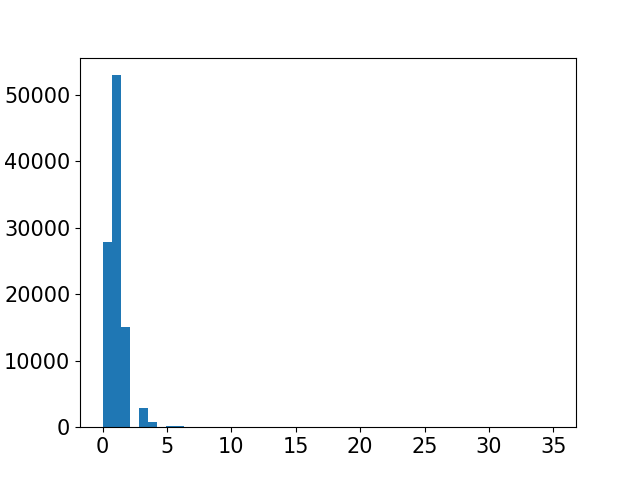

| Object Id | Text or Date |  |
Categorical Variable 231 unique values Up to top 10 values are presented |
No missing values |
Text/Date variable No outliers |
|---|---|---|---|---|---|
| Entry Name | Text or Date |  |
Categorical Variable 229 unique values Up to top 10 values are presented |
No missing values |
Text/Date variable No outliers |
| Plays | Continuous variable (int64) |  |
Min: 0 Max: 20 Mean ± SD: 1.62 ± 2.08 Median (IQR): 1.0 (1.0, 2.0) |
No missing values |
N=1 |
| Minutes Viewed | Continuous variable (float64) |  |
Min: 0.0 Max: 435.83 Mean ± SD: 22.62 ± 50.55 Median (IQR): 1.72 (0.0, 24.13) |
No missing values |
N=0 |
| Avg. View Time | Continuous variable (float64) |  |
Min: 0.0 Max: 129.02 Mean ± SD: 10.15 ± 18.26 Median (IQR): 0.74 (0.0, 13.68) |
No missing values |
N=0 |
| Player Impressions | Continuous variable (int64) |  |
Min: 1 Max: 36 Mean ± SD: 3.11 ± 4.11 Median (IQR): 2.0 (1.0, 4.0) |
No missing values |
N=1 |
| Play to Impression Ratio | Continuous variable (float64) |  |
Min: 0.0 Max: 1.0 Mean ± SD: 0.6 ± 0.41 Median (IQR): 0.67 (0.22, 1.0) |
No missing values |
N=0 |
| Avg. View Drop-off | Continuous variable (float64) |  | Min: 0.0 Max: 1.5 Mean ± SD: 0.35 ± 0.36 Median (IQR): 0.25 (0.0, 0.61) |
No missing values |
N=0 |